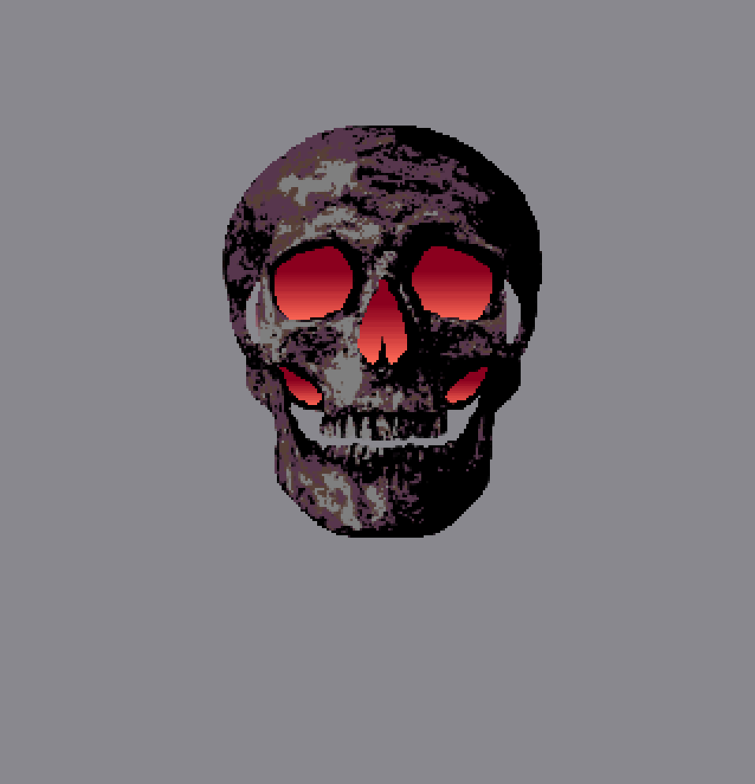
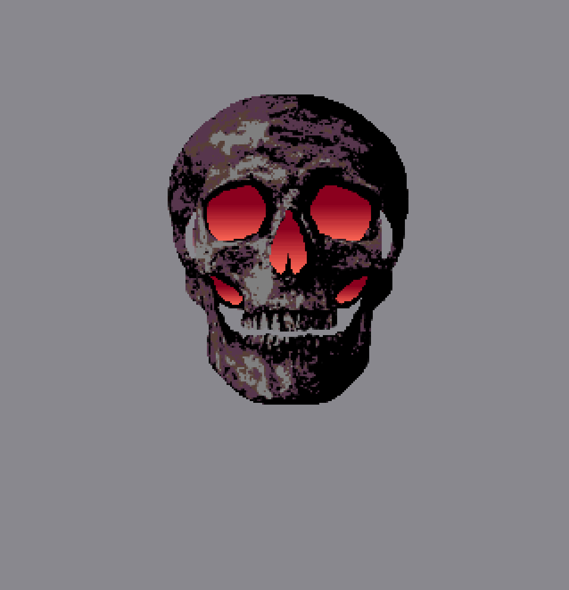
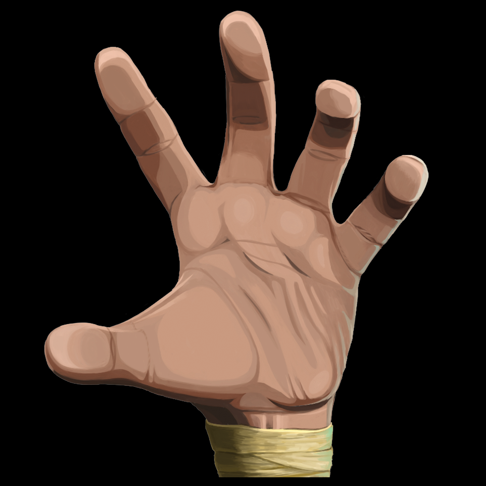
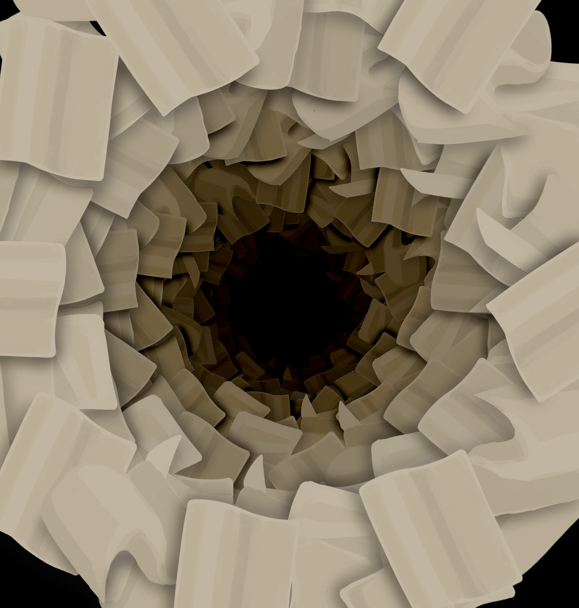
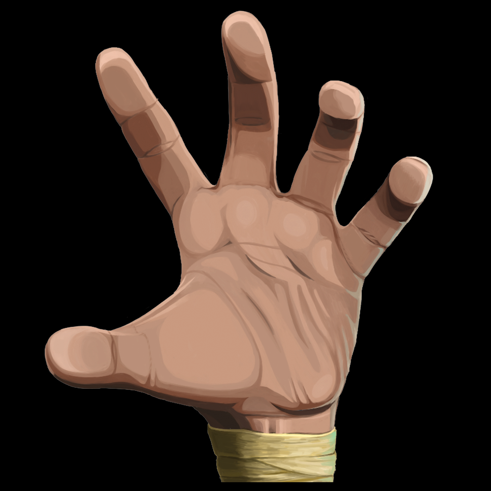
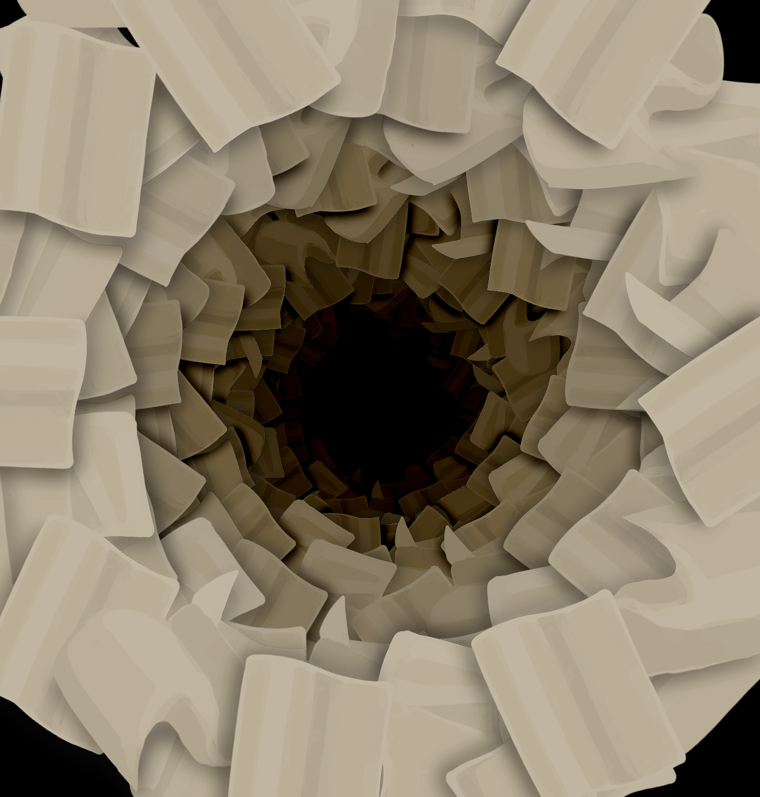

About GRIMWAR
GRIMWAR is a first person movement shooter with pixel-centric visuals and fast paced gameplay.
Use magical spells to vanquish mysterious entities while running through a treacherous tower.
With an emphasis on movement, your swift feet are your avenues for freedom from your perilous imprisonment.
This project is inspired by the pillars of the FPS genre; using their optimization as creative
fuel while being unbound by limitations of hardware.

Project Specs
Team size: 11
Role: 2D Artist
Duration: September 2024 – May 2025
Engine: Unity
Software: Aseprite,
Adobe Photoshop & Premiere
My Work
I created conceptualizations, frame-by-frame animations, and 2D visual assets for this project.
UI Arena Skull
During gameplay, you traverse to areas that lock you in a space
to prevent progression until all the enemies within are destroyed.
This is what we call an arena.
I made this skull UI element that is used to count enemies currently active within a wave.
The initial concept of the arena skull was made by another artist
on the team; to which I was tasked with making the final sprite,
as well as animating it.

 

Spell Icons
The spells are the player's avenue for action.
They are all offensive weapons as well as offer unique abilities.
We had the names for Dreams, Gravity, Pestilence, and Lightning; but no identifiable glyph to match.
Dreams was actualized rather early on, so I had the other three to make concepts for.
HUD Hands
One notable asset is the hands that appear during gameplay.
There are animated sprites for player actions which include:
Idle, Obtaining Unique Spells, Attacking with those spells, and Spell discarding.
The process of creating each sprite is broken down into the four steps you can see below.


This involves recording poses using a video camera and converting the video file into a GIF.
I used video software Adobe Premiere for this. In the GIF conversion processes, it naturally compresses the footage both in color and resolution.
Once the footage is compressed, it is ready for Trimming. My program of choice for the remainder of the steps is Aseprite. The initial step is marking key frames in the poses. These are the strongest in the animation.
When these are marked, the other less important frames can begin to be deleted. The purpose of this is to reduce the amount of frames per animation down to the essentials and display the action in as little frames as possible.
Once the essential frames are chosen and the rest are cut, then can Adjustment begin. The initial footage features a swaying actor with a freehand camera. This step is meant to manually stabilize the pose and create flair within the animation. It is also common to manually rotate, skew, and correct posing on certain frames to make an animation flow smoother. Then the hand is tone corrected by adjusting contrast.
Only when adjustments are made, will the animation be considered for Masking.
Masking is done after the hand itself animates as intended; which includes the checking of this list:
-Is the pose scaled correctly in relation to other poses?
-Is the pose less than 10 animation frames?
-Has the pose been stabilized? Is it free from jitters?
-Does the pose only come from bottom frame? (Pose does not come from side edge)
-If a looping animation, does it loop seamlessly?
-If an Intro/Outro animation, does it flow well into and from sequential poses?
-Has the tone been corrected?
If all are approved, then the Masking process can begin. Masking is removing the background from the main pose, which is done manually frame-by-frame to ensure a clean cut per animation. This is done to prevent blurred anti-aliased edges from automated processes such as chroma/ultra keying.
After Masking, the final pose is indexed. The color count is reduced from 128 to 4. The pose is then imported into engine and set up in Unity's animator for gameplay use.
Game Disk
The final CD for the game was assigned to me.
The concept of the hand reaching out of the book's pages was a great jumping off point to start, so I approached it similarly to how I did the hands sprites.
I did want to polish the look more, so I opted to repaint the hand before indexing.
There were many palette tests to help determine our favorite.
 


